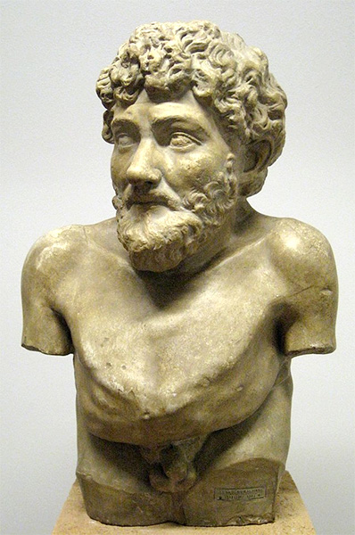

Stories and the tales of Aesop Aesop lived as many thousands of years when ago is
difficult to get information. Relating to the history of Aesop is complete, however,
despite data Several currents. But most of the history boffin Aesop is agreed that the
following information: "Aesop's story seems to be most accurate."
Aesop Greek slave, one who lived during 560-620 BC or AD 208 the previous year (Buddha Formula 80 years ago when AD)
represents the time the current 2755-2815 year, he lived in Sar.distributions. On the Greek island of Samos.
This island is located offshore. Of Turkey today. In ancient Greece all the coast of Turkey has Greeks. A densely,
Aesop is re disabled people ride these, but he has a beautiful soul. Printer-friendly version in contrast to his initial
Aesop from the Trace is one of the ancient city-state now Trace is the land of the Greek and Bulgarian part. Aesop to work
as slaves on the island Samos with a minuscule Monte said slaves during slavery. Aesop has the reputation to himself and said his being.
story telling talent and is well known in the local.Eventually it was released to Aesop. Freedom from slavery.Because the people with
flair and an acute understanding of his.
When Aesop was that freedom. Ese Yong He has a famous story told in so many have been invited to go to work. In the court of King Crazy ASUS.
He is the king last year Han Kingdom of Lydia. Asia Minor. We have the court of the wise scholars already knows many of the previous example,
Seoul and Athens Tech Min Lease of Lake Tasman soon as Zeus is King Crazy King.Favorites former slave who is rapidly It has an acute pleasure in
wisdom and intelligence. Natural his Aesop can offer all the fun.And think in different terms to him he learned the truth about many of his politics from
listening than from the Aesop fable of the wise men talk regularly with other court.
While the king Crazy ASUS has a small head of all the Greek city-state with He has sent. Aesop to the duties of the envoy to the capital city-these Aesop's fable
for his cause. The successful performance of duties such as smart In Corinthians. Aesop fable for his The media, warning people of the pharmacist Yan danger to
be incurred from the use of rules Moo Athens, he uses stories about "กบเลือกนาย" the media persuade the inhabitants adherence to rule of SUSS one player Continental a successful
Death comes to the life of Aesop. When the king Crazy ASUS sent him to perform envoy in Delft, Philips at this city Aesop fable using animal church Wise told the truth about injustice,
political to the town knows his actions have the power. soreness of the fire storm in the heart of the janitor City of Delft, Philips hard Politicians theseAesop is thought revenge by
secretly took Khanthong. Thep sacred temple of Apollo into your baggage Aesop He then allegedly stolen in the Aesop is alleged to commit attacks and destroys people like Phil Del serious
Moreover, the barbarianIllegal and barbaric. Aesop was punishment by being thrown down from the cliffs to the death Unfortunately, in the very best ...
Creating a concept Cultivation The people have faith in any way.One during the three thousand years ago. In addition, it is not easy in those days to see the wide world is not no science to
prove the story. To know what is what And the establishment that will be Who knows, or called the wise men are punished severely. Quite, because in those days. People will know it must be
addressReligion only If the measurement shows the outsider who knows.Chance to be clergy They say religious leaders. Find out out to thatWizard is a magician who they are punished quite deadly.
Aesop is also intended to create a story. To teach the people about good moral self, but he knows that he will make a directOther not because it has come to a disaster. He is bound to teach his subject
into the story. And actors in his story is a different animal to most people understand that listening is tell a story together for fun only. Not about teaching anyone.
For this reason itself. The story of Aesop So no one thinks he is taught to people in order to bless all wrong, but listening to his story because of the fun.
His story was the same designation called "Folklore."
Aesop's fable has been popular in the listener's life, he worked with the story telling routine and keep everyone in his local know him very well. Everyone is different and I want to hear your story.
Whether they are the children or adults. Aesop's life end.Unfortunately, just like Tales of Aesop, but there is also a reputation among the same people. Distribution increases. From one mouth to another mouth to another.
Aesop fable is not ready to die of Aesop
After Aesop died soon Athenian person name Lee Sin-cap any of Aesop sculpt the monument in front of top scholars. Seven of the people. Athens, which was that Aesop was named the best of equivalents of the famous Athenian philosopher
of the era is quite.Aesop fable has been publish any moment where is that more than three thousand refugees from one to one. Remember Aesop fable to relate the story they are scattered around the world and the world. After hearing all
of the Aesop fable, then they will realize the good sense to get the story. Have recognized that good. And evil along with the fun.
Tales of Aesop fable has become immortal. The dead never leave this world. I can hardly say that Aesop fable that exists everywhere in every country in the world is that.
Greek slave Aesop fable of the world's intelligence. And the role of the Aesop fable since Past until now. It is clear that points would see the benefits of the Aesop fable of the mass Human well.
credit:http://www.kalyanamitra.org/th/Aesop_detail.php?page=2252